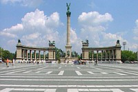

|
|
1.
Alternative Stadtrundfahrt - mit der Strassenbahnlinie 2 |
| |
|
|
1.
Besichtigung des Burgberges
Was Sie dort sehen möchten, entscheiden Sie bitte selbst am
Burgberg. Die Matthiaskirche und die Fischerbastei bieten sich
an, für sie benötigt man 1-2 Stunden. Für den Burgpalast und
dessen Areal benötigte man 2-3 Stunden allein für den ersten
Überblick. |
|
|
2. Abfahrt mit der Standseilbahn zur Kettenbrücke.
Wer diesen Steilhang abwärts lieber zu Fuß bewältigt, braucht nicht
auf den nächsten Zug warten und kann den Panoramablick über die
Donau deutlich länger genießen. |
|
|
3.
Spaziergang auf der 375 Meter langen Kettenbrücke
....hinüber in den östlichen Stadtteil Pest. und
rechts erstreckt sich in südlicher Richtung eine Hotelreihe.
Rechts ist auch die Haltestelle der Straßenbahnlinie 2. |
 |
|
|
Wenn man in Pest ankommt, steht man direkt gegenüber dem Gresham
Palace, heute 5-Sterne-Hotel Sophitel, die frühere Musikhalle von
Budapest. |
|
|
Im
Stadtteil Pest angekommen steht man zuerst am
Széchenyi
tér Platz. Richtung Norden sehen
Sie das
Gebäude der
|
 |
Sollten
Sie spätabends
in der Nähe des Parlaments am Donauufer stehen, dann sehen Sie das Bild links.
Hinter der Kettenbrücke steht der Burgberg mit dem kgl.
Burgpalast - beide fast immer beleuchtet nach dem Einbruch der
Dunkelheit. |
 |
Südlich
von der Kettenbrücke steht ein Hochhaus, das seit neuem der
Hotelkette Hyatt Hotels gehört. Es ist ein panelartiges
Hochhaus aus der roten Ära, das ursprünglich Hotel
Intercontinental hieß (Foto aus "Bild"). Aus den Zimmern mit
Fenster zur
Donau hat man einen herrlichen Panoramablick, etwas besser
als aus dem Gresham Palasthotel. |
Vor dem Hotel Hyatt beginnt der
Donaukorso, der sich zwischen Kettenbrücke und
Elisabethbrücke erstreckt. Bei schönem Wetter ist es
ein Muß, entlang dieser Promenade zu flanieren.
Vom Donaukorso mit Straßencafés bewundern
Touristen wie Einheimische eines
der schönsten Panoramabilder der Stadt. Man sieht
direkt
gegenüber auf
der anderen Donauseite
der Reihe nach aus dem Norden in Richtung Süden betrachtet die
Matthiaskirche, die Fischerbastei, den kgl.
Burgpalast und den
.
|
 |
4.
Fahrt mit der Straßenbahnlinie 2 zum Parlament am Kossuth Lajos tér
Platz
Nehmen Sie Zeit und schauen Sie den Platz vor der Machtzentrale
an. Anschließend Weiterfahrt. |
 |
5.
Steigen Sie wieder in die Straßenbahnlinie 2 in Richtung
Kettenbrücke ein und fahren damit bis zur Freiheitsbrücke bzw. Szabadsághíd,
die früher Franz Josef Brücke hieß. Der Kaiser schenkte Budapest
zwei Brücken aus seinem Privatvermögen wegen der Liebe seiner Frau
Sissy zu den Ungarn. Die andere Brücke heißt auch heute noch
Elisabethbrücke. -
Während der Fahrt bewundern Sie das Panorama über die Donau hinweg
auf die Berge von Buda, den kgl. Burgberg,
die Matthiaskirche und darunter die Fischerbastei, ferner den
. |
|
|
6.
Hier ist die Große Markthalle einen Besuch wert.
Da sollten Sie manche Köstlichkeiten aus der ungarischen Küche
ausprobieren. Zwei
Gaststätten und mehrere Imbissstände im ersten Stock warten auf die
Gäste und Sie können sich gleich danach an den zahlreichen Obst-
und Gemüseständen mit Vitaminen auftanken. Wenn Sie aus
der Markthalle kommen... |
|
 |
7A.
...dann unternehmen Sie einen Spaziergang vom südlichen Ende
der Váci utca Straße bis zum nördlichen Ende am Vörösmarty tér
Platz.
Gegenüber am Platz genießen Sie einen Kaffee im Konditoreicafé Gerbeaud und die obligatorische
Torte Dobos dazu. Vor dem Kaffeehaus
steigen Sie in die gelbe Untergrundbahn, welche auch
Millenniumsmetrolinie genannt wird, und fahren bis zum
Heldenplatz.... |
|
|
|
7B.
...oder Sie steigen an der Markthalle in die Straßenbahnlinie Nr. 49
oder 47 ein und fahren drei Haltestellen zur Endstation am Deák tér Platz.
Während der Fahrt werfen Sie einen Blick auf der rechten Seite der
Straße auf das schöne klassizistische Gebäude des Ungarischen
Nationalmuseums. |
|
 |
8.
Sie Steigen am Deák tér Platz in die gelbe U-Bahnlinie um,
welche auch Millenniumsmetrolinie genannt wird, und fahren zum
.
Im Zentrum steht das Heldendenkmal, oben der Archangel Gabriel und
darunter die sieben Stammesfürsten bei der Landnahme im Jahre 896. Rechts und Links davon stehen
die Kunsthalle und das Museum der Schönen Künste. Falls Sie noch
Zeit haben - machen Sie als Abschluss einen Spaziergang im
Stadtwäldchen oder erholen Sie sich im
|
|
|
| |
| |
Ungarn-Tourist Team

|
 |
| |
|